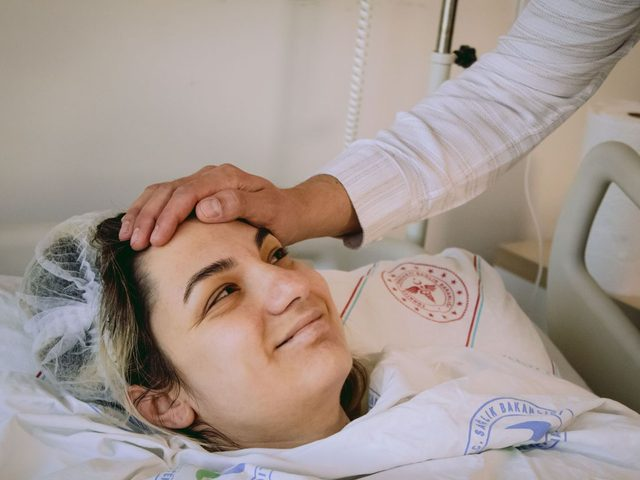
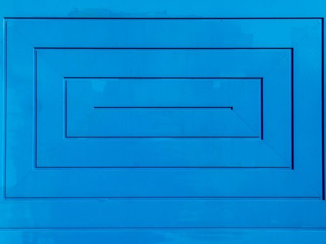
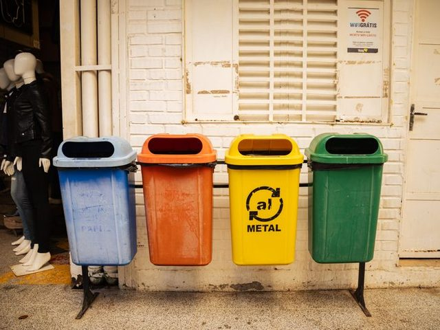
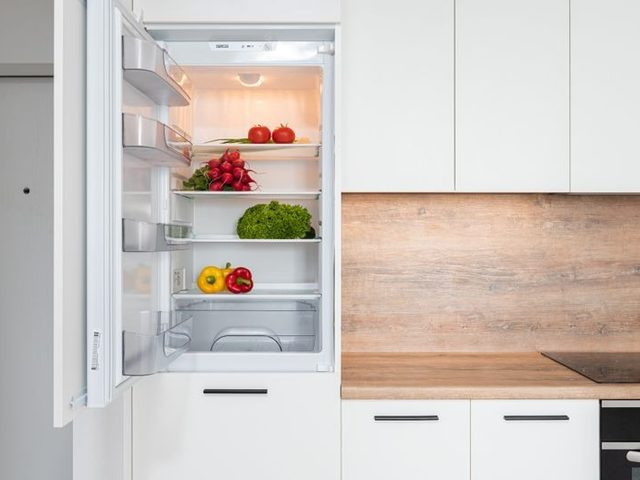
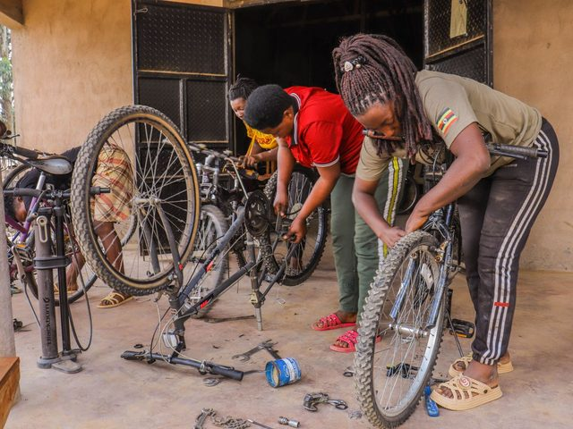

UNIT 39 · VOCABULARY
R 開頭（一）
R-I
32 個單字聽・唸・用
本單元單字一覽
WORD UP「R-I」的 32 個字（record 到 revise）。紅色＝要複習，藍色標籤＝WORD UP 標熟記、還要在這裡考對。
recordrecoverrectanglerecycleredrefrigeratorrefuseregardregionregretregularrejectrelativerememberremindrentrepairrepeatreplyreportreporterRepublic of Chinarequirerespectresponsiblerestrestaurantrestroomresultreturnreviewrevise
每個字都有 🔊，先聽發音、跟著唸，再看例句。
單字 1–4

record
紀錄；唱片；錄音n./v.
She broke the world record.
她打破了世界紀錄。
她打破了世界紀錄。

recover
康復；恢復v.
I hope you recover soon.
希望你早日康復。
希望你早日康復。

rectangle
長方形n.
A door is a rectangle.
門是長方形的。
門是長方形的。

recycle
回收v.
We should recycle bottles and cans.
我們應該回收瓶罐。
我們應該回收瓶罐。
單字 5–8
red
紅色的adj./n.
Stop at the red light.
紅燈要停。
紅燈要停。

refrigerator
冰箱n.
Put the milk in the refrigerator.
把牛奶放進冰箱。
把牛奶放進冰箱。
🙅
refuse
拒絕v.
He refused to help me.
他拒絕幫我。
他拒絕幫我。
👀
regard
把…看作v.
I regard him as my brother.
我把他當作我的兄弟。
我把他當作我的兄弟。
單字 9–12
🗺️
region
地區n.
This region is famous for tea.
這個地區以茶聞名。
這個地區以茶聞名。
😔
regret
後悔v./n.
I regret saying that.
我後悔說了那些話。
我後悔說了那些話。
🔁
regular
規律的；一般的adj.
Regular exercise is good for you.
規律運動對你有益。
規律運動對你有益。
❌
reject
拒絕；駁回v.
They rejected my idea.
他們否決了我的點子。
他們否決了我的點子。
單字 13–16
relative
親戚n.
We visit our relatives during Chinese New Year.
過年時我們去拜訪親戚。
過年時我們去拜訪親戚。
🧠
remember
記得v.
Remember to lock the door.
記得要鎖門。
記得要鎖門。
⏰
remind
提醒v.
Remind me to call Mom.
提醒我打電話給媽媽。
提醒我打電話給媽媽。
🔑
rent
租；租金v./n.
We rented a car in Hualien.
我們在花蓮租了一輛車。
我們在花蓮租了一輛車。
單字 17–20

repair
修理v.
The man is repairing the roof.
那個人正在修屋頂。
那個人正在修屋頂。
🔂
repeat
重複v.
Please repeat after me.
請跟我唸。
請跟我唸。
↩️
reply
回覆v./n.
Please reply to my email.
請回覆我的電子郵件。
請回覆我的電子郵件。
📑
report
報告；報導n./v.
I have to write a book report.
我得寫一篇讀書報告。
我得寫一篇讀書報告。
單字 21–24

reporter
記者n.
The reporter interviewed the mayor.
記者訪問了市長。
記者訪問了市長。

Republic of China
中華民國n.
Taiwan is called the Republic of China.
台灣的國號是中華民國。
台灣的國號是中華民國。
📋
require
需要；要求v.
This job requires good English.
這份工作需要好的英文能力。
這份工作需要好的英文能力。
🙇
respect
尊敬v./n.
We should respect our teachers.
我們應該尊敬老師。
我們應該尊敬老師。
單字 25–28
🧑✈️
responsible
負責的adj.
Who is responsible for this?
誰要為這件事負責？
誰要為這件事負責？
rest
休息；其餘n./v.
Let's take a rest.
我們休息一下吧。
我們休息一下吧。

restaurant
餐廳n.
We ate at a Japanese restaurant.
我們在日本料理餐廳吃飯。
我們在日本料理餐廳吃飯。

restroom
洗手間n.
Where is the restroom?
洗手間在哪裡？
洗手間在哪裡？
單字 29–32
📊
result
結果n.
What was the result of the game?
比賽結果如何？
比賽結果如何？
🔙
return
回來；歸還v./n.
Please return the book to the library.
請把書還給圖書館。
請把書還給圖書館。
review
複習；評論v./n.
I review my notes before a test.
我考試前會複習筆記。
我考試前會複習筆記。
✏️
revise
修改；修訂v.
Please revise your essay.
請修改你的作文。
請修改你的作文。
重點整理
| 說法 | 中文 | 例子 |
|---|---|---|
| remember / remind | 記得 ／ 提醒 | remember to go ／ remind me to go |
| remember to V / V-ing | 記得要做 ／ 記得做過 | remember to call ／ remember calling |
| refuse to V | 拒絕做… | refuse to eat |
| regard A as B | 把 A 視為 B | regard her as a friend |
| be responsible for | 對…負責 | responsible for the class |
| recover from | 從…中康復 | recover from a cold |
| return A to B | 把 A 還給 B | return the pen to Amy |
return 本身就有「回來」的意思，不說 return back。
快問快答：中文 → 英文
1紀錄；唱片；錄音record
2長方形rectangle
3紅色的red
4拒絕refuse
5地區region
6規律的；一般的regular
7親戚relative
8提醒remind
快問快答：英文 → 中文
1repair修理
2reply回覆
3reporter記者
4require需要；要求
5responsible負責的
6restaurant餐廳
7result結果
8review複習；評論
學完了！接下來
複習方法
review
- 回到「📗 單字卡」，按「遮中文」自己考自己
- 再按「遮英文」，看中文說出英文
- 每個例句跟著 🔊 唸一次
準備好了
- 按右上角「📝 前往測驗」
- 測驗錯的題目要訂正到全對
- 訂正完成補送 1 點